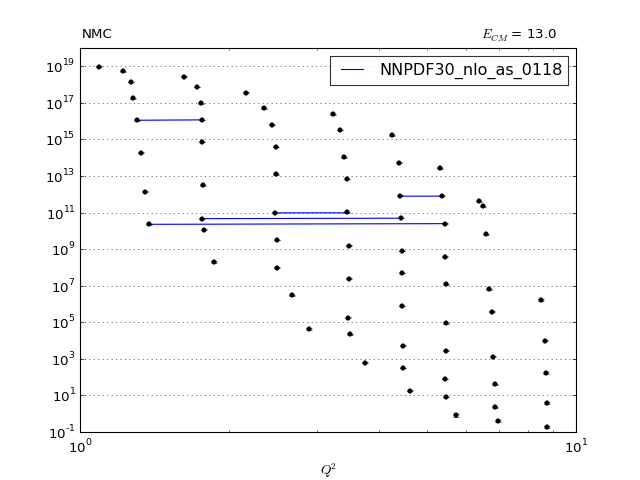
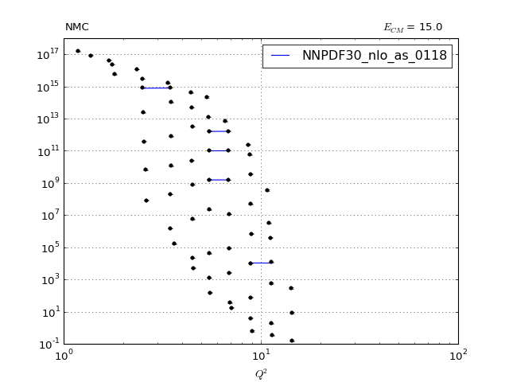
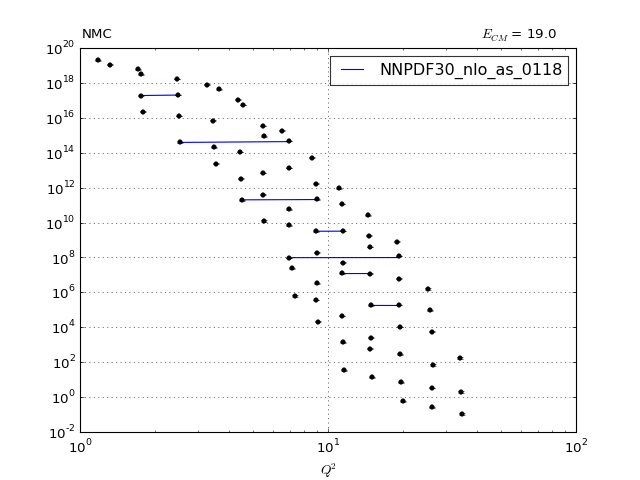

<h1>NMC</h1>

<h4>Plot vs Datapoint</h4>

<p><a href="NMC.pdf"></a> </p>

<p><a href="../index.html">Return to Index</a></p>

<hr />

<h4>Plot vs Kinematics (collated bins)</h4>

<h6>n.b bins are scaled by a factor of 2^i where i is the bin index</h6>

<p><a href="NMC_0.pdf">0" title="" /></a>
<a href="NMC_1.pdf">1" title="" /></a>
<a href="NMC_2.pdf"></a></p>

<p><a href="../index.html">Return to Index</a></p>

<hr />

<h4>Ratio plot vs Kinematics (collated bins)</h4>

<p><a href="../index.html">Return to Index</a></p>

<hr />

<h4>Plot vs Kinematics (individual bins)</h4>

<p><a href="../index.html">Return to Index</a></p>

<hr />
<head>
<link rel="stylesheet" type="text/css" href="../github.css">
</head>
